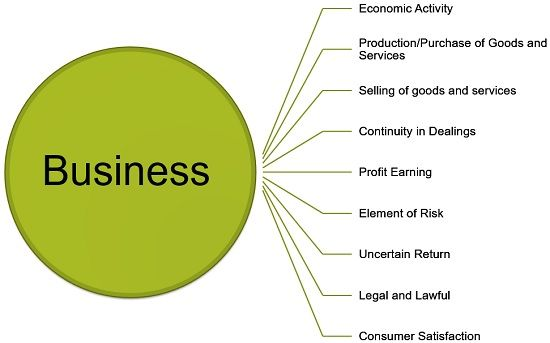

Business Definition: Business is defined as an organised economic activity, wherein the exchange of goods and services takes place, for adequate consideration. It is nothing but a method of making money, from commercial transactions. It includes all those activities whose sole aim is to make available the desired goods and services to the society, in an effective manner. It is a systematic attempt of the businesspersons to produce goods and services, and sell them at the market, to reap the reward, by way of Profit plays a pivotal role, as all the business activities are directed towards it, because it works an incentive to the entrepreneurs, for their efforts, and thus, necessary for every business.
Business is an economic activity, as it is conducted with the primary objective of earning money, i.e. for an economic motive.
:Business must involve the transfer of goods to the customer for value, through selling, meaning that if the goods are acquired for personal consumption, then the transaction will not amount to business activity.
Every business requires regularity in transactions, i.e. an isolated transaction of exchange of goods or services will not be considered as business. So, to constitute business, the dealings must be carried out on a regular basis.
The basic purpose of business is to make the profit from its activities. It is the spine of business, which keeps the business going, in the long term.
Risk is the key element of every business, concerned with exposure to loss. Efforts are made to forecast future events and plan the business strategies accordingly. However, the factors that affect business are uncertain and so does the business opportunities, which can be a shift in demand, floods, fall in prices, strikes, lockout, money market fluctuation, etc.
In business, the return is never predictable and guaranteed, i.e. the amount of money which the business is going to reap is not certain. It may be possible that the business earns a huge profit or suffer heavy losses.
Industry implies the economic activities that are associated with the conversion of resources into goods that are ready for use. This involves production, processing, mining of goods. The industry is further divided into three broad categories; primary industry, secondary industry and tertiary industry.
In simple terms, commerce refers to the buying and selling of goods for value, and includes all those activities which facilitate the transaction. Further, commerce encompasses two types of activities, trade and auxiliaries to trade.
From the past few years, the entire concept of business has undergone a drastic change, i.e. it has been turned from producer oriented activity to consumer-oriented activity. Previously, the approach is ‘to sell what is produced’, but now the approach is ‘to produce what is demanded’
Commerce E-commerce Economic Activity National Income Business Environment